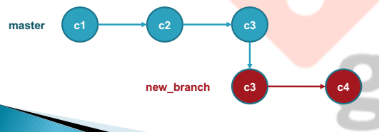

Git
Es un SERVICIO (estándar) de comunicación y gestión de información entre local y remoto.
Areas
- Directorio de trabajo, donde estan los archivos
- Staging, área de preparación, no guardado del todo
- Repositorio Local, se encuentra en nuestro ordenador
- Repositorio Remoto, centraliza el repositorio
Los estados de los ficheros
| Nombre | Explicación |
|---|---|
| Untracked | El fichero no está bajo el control de versiones. No está en el repositorio. |
| Unmodified | El fichero está en el repositorio pero no ha sido modificado desde su última versión confirmada. |
| Modified | Los datos/ficheros se han modifcado, pero todavía no lo has confirmado a tu base de datos |
| Staged | Se ha marcado un archivo modificado en su versión actual para que vaya en tu próxima confirmación. |
| Commited | Los datos/ficheros están almacenados de manera segura en tu base de datos local |
Git comandos básicos
-
git help
- muestra la ayuda del comando indicado
-
git init
- inicializa el repositorio local
-
git log
- lista los commits del repositorio y los punteros y ramas
- --oneline
- --oneline --all
- lista los commits del repositorio y los punteros y ramas
-
git status
- muestra la lista de los archivos que se han cambiado junto con los archivos que están por ser preparados o confirmados
-
git add
-
añade el archivo a staging
- git add ., añade todos los archivos
-
añade el archivo a staging
-
git commit
-
guarda los archivos en el repositorio local
- -m, añade un mensaje
- --amend, edita el mensaje
-
guarda los archivos en el repositorio local
-
git diff
- mostrar diferencias entre los archivos
Git comandos
-
git remote
-
mostrará una lista con los nombres de los remotos que hayas
especificado (verás al menos ‘origin’)
- git remote show, ver más información acerca de un repositorio remoto en particular.
- git remote rename, cambiar el nombre del repositorio remoto
- git remote rm, eliminar alguna referencia del repositorio local y no elimina su historial del sistemas de versiones.
- git rm --cached mueve los archivos que indiquemos al estado untracked
- git rm --force elimina los archivos de git y del disco
-
mostrará una lista con los nombres de los remotos que hayas
especificado (verás al menos ‘origin’)
-
git reset HEAD
- quita los archivos de staged y los devuelve a sus estado anterior (unstaged).
-
git branch –M main
- la rama master local pasa a llamarse main, como la de por defecto de GITHub.
-
git push -u
- genera un canal de comunicacion de subida (upstream), entre la rama local y la remota: git push -u origin
-
git clean
-
hace una eliminación permanente del sistema de archivos
(recursos untracked), similar a ejecutar la utilidad rm de línea de
comandos.
- git clean –n, indica los ficheros que eliminaría
- git clean –f, elimina los ficheros
-
hace una eliminación permanente del sistema de archivos
(recursos untracked), similar a ejecutar la utilidad rm de línea de
comandos.
-
git checkout
- el directorio de trabajo coincidirá con el estado exacto del id_commit. Se puede consultar y editar archivos, compilar el proyecto y realizar pruebas sin perder el estado actual del proyecto. Nada lo que se haga se guardará en el repositorio. Para continuar con el desarrollo, hay que volver al estado “actual” del proyecto, mediante git checkout main
-
git reset
- git reset HEAD [file] devuelve el fichero al estado untracked.
- git reset [--soft || --mixed || --hard] [HEAD^ || id_commit] elimina los commits que se le indica por argumento, y en función del modo.
-
git revert [HEAD^ || id_commit] sirve para deshacer cambios
efectuados en el historial de confirmaciones de un repositorio. Una
operación de reversión tomará la confirmación especificada, invertirá los
cambios de dicha confirmación y creará una "confirmación de reversión"
nueva. Entonces, los punteros de referencia se actualizarán para apuntar
a la nueva confirmación de reversión, lo cual la convertirá en la punta de
la rama.
Así, se evita que Git pierda el historial, lo cual resulta importante para la
integridad del historial de revisiones y para que la colaboración sea
fiable. ESTA ES LA ACCIÓN NECESARIO PARA EVITAR ERRORES DE
SINCRONIZACIÓN CON EL SERVIDOR REMOTO.
- -e || --edit te permite incluir un mensaje en el commit, es la acción por defecto.
- --no-edit añade el mensaje por defecto
- -n || --no-commit revierte lo indicado pero no realiza el nuevo commits
-
git tag
-
muestra las etiquetas que existen y se han definido en el
repositorio local git.
- git tag -a [nombre_etiqueta] -m [“Mensaje”] genera la etiqueta con el nombre dado en el commit que nos encontremos.
- git tag -a [id_commit] -m [“Mensaje”] genera la etiqueta con el nombre dado en el commit que se indica por su id.
-
muestra las etiquetas que existen y se han definido en el
repositorio local git.
Trabajar con ramas
Bifurcaciones de nuevas versiones, con respecto a la rama máster.
Todos los commit se aplican sobre una rama.
Por defecto trabajamos sobre la rama máster.
Crear una rama consiste en copiar un commit de una rama
determinada, pásalo a la nueva rama y continuar el trabajo, sin afectar
el flujo del trabajo principal.

-
git branch se usa para listar, crear o borrar ramas.
- git branch lista las ramas existentes
- git branch [nombre_nueva_rama] crea una nueva rama
- git branch -d [nombre_nueva_rama] elimina una rama existente.
- git branch –m [old_nombre_rama] [new_nombre_rama] cambia el nombre de una rama
- git show te permite ver el último commit a qué ramas se encuentra pegado.
-
git log muestra los IDs de los commits del repositorio local.
- git log –p incluye el historial de las confirmaciones, incluyendo todos los archivos y sus cambios
- git log --oneline muestra historial commits en una sola línea x commit.
- git log --oneline --all muestra historial commits de todas las ramas
-
git checkout te permite moverte entre las ramas.
- git checkout –b [nombre_nueva_branch] crea una nueva rama y automáticamente se cambia a ella.
- git checkout [ID_commit] podemos volver a cualquier versión anterior en base al ID del commit..
-
git diff se usa para ver una lista de todos los conflictos presentes
- git diff [branch_origen] [branch_destino] ver los conflictos que hay entre ramas, por ejemplo antes de fusionarlas.
- git merge [nombre rama] se usa para fusionar una rama con otra rama activa.
- git merge --abort descarta la fusión por conflictos en la misma.
- git log --merge te muestra información de los 2 commits que han generado el conflicto
- Copiar un repositorio remoto en local:
git clone [remote_repo] [directory_local] - Copiar únicamente una versión específica (tag) del repositorio:
git clone --branch [tag] [remote_repo] - Copiar una rama específica de un repositorio:
git clone --branch [branch_name] --single-branch [remote_repo] - Fusionar todos los cambios del repositorio remoto a tu directorio local:
git pull [servidor_remoto] - Descargar una rama específica del servidor remoto:
git pull [servidor_remoto] [rama] - Mostrar un proceso detallado al hacer pull:
git pull --verbose [servidor_remoto] - Realizar un fetch + rebase al servidor remoto:
git pull --rebase [servidor_remoto]
Comandos de git fetch
- Recuperar todos los datos del proyecto remoto sin fusionarlos:
git fetch [nombre_servidor_remoto] - Cambiar a la rama
fetch_HEADdespués de hacer fetch:git checkout fetch_HEAD - Crear una nueva rama desde el fetch:
git checkout -b [new_Branch]
- Ver las diferencias entre una rama local y una remota:
git diff [rama_local] [rama_remota_cambios] - Hacer pull de una rama específica:
git pull [rama] - Fusionar una rama específica:
git merge [rama]